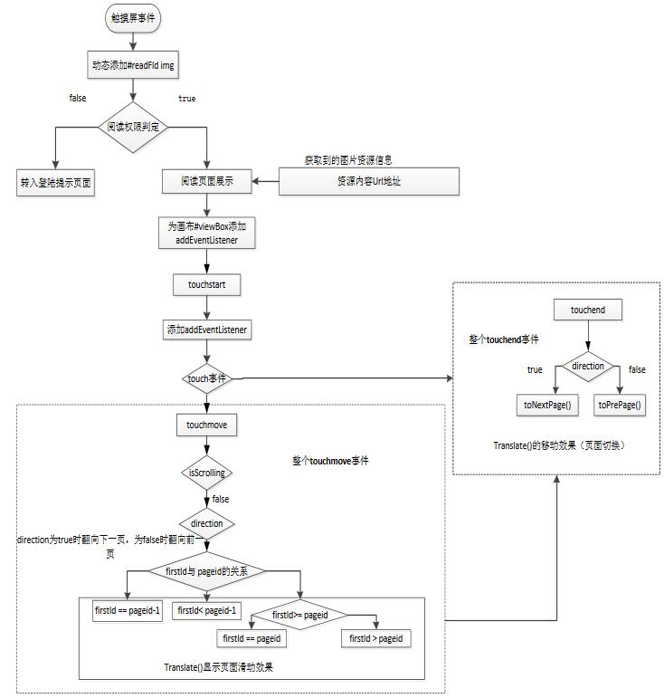
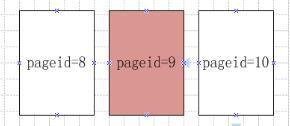

基于HTML5的移动阅读内容展示方式
李青， 王晨升
（北京邮电大学自动化学院，北京 100876）
摘要：据“2 014中国数字阅读白皮书”的大数据显示，在2014年底，手机阅读用户接近3个亿，手机阅读明显已经成为手机网民在重拾碎片时间中的主要活动之一。目前的移动阅读平台由Native App主导，Native App生命周期短、占据用户设备内存资源、上架审核流程复杂、版本更新慢的劣势日益显现。基于
HTML5的移动阅读Web App，采用自适应的网页布局方式，自动识别设备屏幕宽度，适配不同分辨率的设备填充文本内容，对内容资源进行版式与流式的排版展现。满足了用户打开移动设备浏览器就能进行阅读的需求，提升阅读体验。
关键词：Web；Native App；Web App；阅读
中图分类号：TP303.2
The Content Display Method of Mobile Reading Based on HTML5
LI Qing, WANG Chensheng
(Automation School,Beijing University of Posts and Telecommunications,Beijing 100876)
Abstract:According to the "2014 China Digital Reading white paper",at the end of 2014, the mobile phone users to read nearly 3 hundred million, mobile phone reading has become one of the main activities of mobile users in the time of repicking up the debris. The currentmobile reading platform is dominated by App Native, the App Native has a short life cycle, which has the disadvantages of occupying user's device memory resource, the complexity of the audit process and the slow version of the update.The Mobile reading Web App,which is based on HTML5,adapt of different resolutions of the device to fill the text content. It meetsthe needs of the user to open the mobile browser to read the mobile device to enhance the reading experience.
Key words:Web; Native App; Web App; reading
0 引言
随着Wifi、4G等网络技术的不断发展，数据网络传输变得更加快捷与便利，带动了移30动设备的智能化发展、智能移动设备应用的爆发性增长。在应用市场中，移动阅读相关应用市场占有量突出。目前的移动阅读平台由都Native app主导。而Native App应用的劣势也日益显现。对于开发者而言，Native App应用需要针对各种手机操作系统开发多个版本，同时Android版本碎片化问题给开发带来了更大的阻力。随着W3C对HTML5规范的制定1
，web app使用的网页语言在大部分操作系统和浏览器中都兼容，有效节省了开发成本，跨平台性、35版本迭代更新简单等巨大优势显现。基于HTML5的移动阅读应用使用户只需打开浏览器，便能随时随地看书2
。
Web App开发的重要特性是一套代码适配所有手机设备。但是，移动端设备屏幕尺寸碎片化严重。对于Android主流的分辨率就有480x800、480x854、540x960、720x1280、1080x1920。随着苹果公司推出iPhone6 与iPhone6 Plus，iPhone系列分辨率有以下几种：40640x960、640x1136、750x1334、1242x2208。Ethan Marcotte在2010提出了“自适应网页设计”，即自动识别设备屏幕宽度、做出相应网页调整。
数字阅读终端内容可分为纯图片与图文混排两种内容形式。内容展示过程中的滑屏效果需要表现的类似于纸质书籍阅读的效果，更贴近用户需求。本文主要针对版式排版的展示效果实现与流式排版展示效果实现加以说明。
1 用户触摸屏事件
1.1 Touch事件处理机制
移动阅读要实现和纸质类书籍阅读类似的阅读体验，需要对用户触摸屏动作做出滑屏或者翻页的效果处理。处理过程即设备屏幕受到用户滑动屏幕后，页面试图区域随手指的移动而移动，手指抬起时根据移动方向判断用户进行上页或是下页的操作，自动移动切换到目标50页面。
用户点按触摸屏设备，会触发Touch事件3
。Touch事件包含了Touchstart（手指触摸屏幕上的时候触发）、Touchmove（手指在屏幕上移动的时候触发）和Touchend（手指从屏幕上拿起的时候触发）、Touchcancel（系统取消touch事件的时候触发）。在这一系列的Touch事件触发过程中，伴随有页面的移动，移动效果的处理过程可使用css3中的translate55（）方法实现。由于用户在触摸屏设备的屏幕上进行滑动或多点手势操作时往往会触发浏览器行为，例如滚动和缩放。为保证对用户触摸屏事件处理的可控性，需要在html文档的头部加上
<meta name="viewport" content="width=device-width,
minimum-scale=1.0,maximum-scale=1.0user-scalable=no"/>
禁止视图区域滚动和缩放。
1.2 Click事件处理机制
2 页面切换效果实现方法的比对
2.1 Touch事件与translate( )方法实现
对应的html文档层级关系如下：
<div class="wrap" id="viewBox" > //视图区域
<div id="readFld"> //内容填充区域
......
</div>
</div>
具体实现的流程图如图1所示：

图1 用户触摸屏事件翻页效果处理
Fig. 1 The processing of page-flipping because of the touchesevent
2.2 借助Swiper插件实现

图2页面初始化处理
Fig.2 The processing of Page initialization
上述处理过程中，使用到的监听事件回调函数有以下几种，代码片段如下：
var mySwiper = new Swiper('.swiper-container',{ //创建swiper
onSliderMove: function(swiper, event){ //监测用户滑屏事件
slideEvent();
},
onTap: function(swiper){ //监测用户点击事件
clickEvent();
},
onSlideChangeStart: function(swiper){ //滑块释放时如果触发slider切换则执行
},
onSlideChangeEnd: function(swiper){ //slider切换结束时执行190
}
});
其中onSlideChangeEnd方法是关键。它表示视图区域的slide完全切换，即脱离视图区域时候进行的回调。在加载slide与删除slide的事件操作就是在这个回调函数中完成的，上述过程的实现均基于onSlideChangeEnd这个回调函数。
参考文献
(Reference)